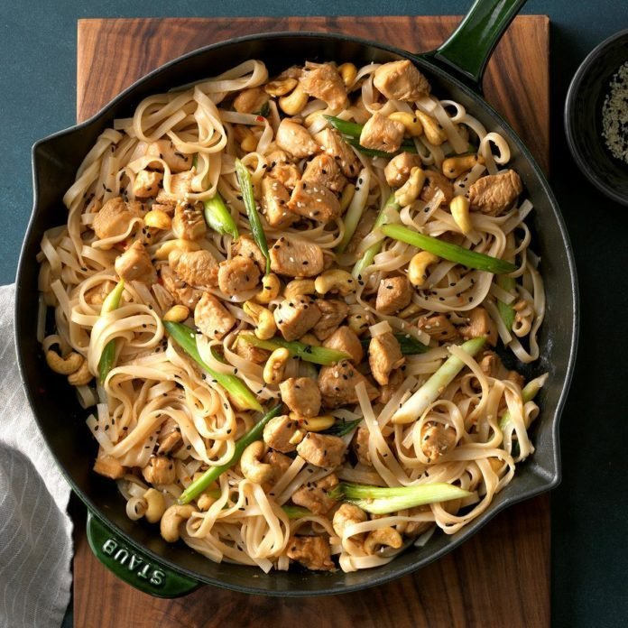

Cashew Chicken with Noodles🍜
Quick, Easy & Delicious

Recipe
Course: Main
Cuisine: Chinese
Preparation Time: 20 minutes
Ingredients:
- 8 ounces uncooked thick rice noodles
- 1/4 cup reduced-sodium soy sauce
- 2 tablespoons cornstarch
- 3 garlic cloves, minced
- 1 pound boneless skinless chicken breasts, cubed
- 1 tablespoon peanut oil
- 1 tablespoon sesame oil
- 6 green onions, cut into 2-inch pieces
- 1 cup unsalted cashews
- 2 tablespoons sweet chili sauce
- Toasted sesame seeds, optional
Instructions:
- Cook rice noodles according to package directions.
- Meanwhile, in a small bowl, combine the soy sauce, cornstarch and garlic.
Add chicken. In a large
cast-iron or other heavy skillet, saute chicken mixture in peanut and sesame oils until no longer pink.
Add onions; cook 1 minute longer.
- Drain noodles; stir into skillet. Add cashews and chili sauce and heat through. If desired, top with toasted
sesame seeds.
Reference: Taken from
here
Back to Main page